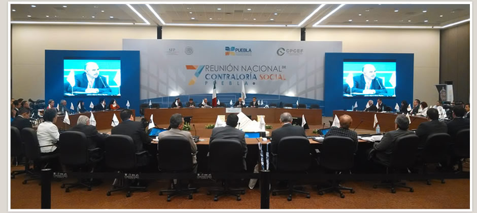

Contraloría General del Estado
Mstro. Bladimiro Hernández Díaz
Edificio del Poder Ejecutivo 4o. Piso
Calzada Independencia y Paseo de los Héroes, Centro Cívico,
Mexicali B.C., C.P 21000
bhernandezd@baja.gob.mx
Tel. 558-1135, fax. 558-1974
Subcontraloría "Contraloría Social"
Mstra. Iraís María Vázquez Aguiar
Edificio del Poder Ejecutivo 1er. Piso, Centro de Gobierno, Tijuana B.C.
Vía Oriente No. 1 Zona del Río Tijuana B.C. C.P. 22320
imvazquez@baja.gob.mx
Tel. (664) 624-20-00 Ext. 2036
Dirección Administrativa
Lic. Milton Correa Pérez
Plaza Baja California #473, Locales 1A, 7A Y 9C
Calz. Independencia, Centro Cívico, Mexicali B.C. C.P 21000
mcorrea@baja.gob.mx
Tel. 555-4920, ext. 8252
Dirección de Auditoría Gubernamental
C.P.C. José María Armendariz Palomares
Edificio Segundo Piso #370,
Calle del Hospital, Centro Cívico, Mexicali B.C. C.P 21000
jarmendariz@baja.gob.mx
Tel. 555-4920, ext. 8267
Comisión Estatal de Avalúos
Ing. Edgardo Ortega Cañez
Av. de los Pioneros #1010,
Centro Cívico, Mexicali B.C. C.P. 21000
eortega@baja.gob.mx
Tel. 838-7791, 838-7792 ext. 8162
Direccion de Evaluacion Gubernamental y Mejora de la Gestión Pública
Lic. Leonardo Esparza Medina
Edificio del Poder Ejecutivo 4o. Piso
Calzada Independencia y Paseo de los Héroes, Centro Cívico,
lesparza@baja.gob.mx
Tel. 558-1135 ext. 8321
Dirección de Fiscalización y Evaluación de la Inversión Pública
C.P. Yolanda Isabel Fierro Valenzuela
Plaza Baja California #473, Locales 1A, 7A Y 9C
Calz. Independencia, Centro Cívico, Mexicali B.C. C.P 21000
yfierro@baja.gob.mx
Tel. 555-4920, ext. 8260
Dirección Juridica, Responsabilidades y Situación Patrimonial
Lic. Patricia Guzmán Delgado
Edificio del Poder Ejecutivo 4o. Piso,
Calzada Independencia y Paseo de los Héroes Centro Cívico,
pguzmand@baja.gob.mx
Tel. 558-1135 ext. 1269
Unidad Concentradora de Transparencia
M.A. María Elena Sotelo Santana
Edificio del Poder Ejecutivo, 4to. Piso, Centro de Gobierno,
Calz. Independencia No. 994, Centro Cívico,
mesotelos@baja.gob.mx
Tel. (686) 558-1000 ext. 1131
Coordinadora de Comunicación
Ciria Elena Félix
Edificio del Poder Ejecutivo, 4to. Piso, Centro de Gobierno,
Calz. Independencia No. 994, Centro Cívico,
ciriafelix@live.com
Tel. 558-1135 ext. 1325